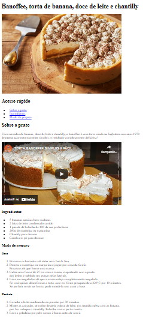

Back End Student
Apresentação
Meu nome é Belinessa, sou haitiana tenho 21 anos sendo a caçula de três irmãos.
Aos 9 anos
saí do Haiti e fui para a República Dominicana onde passei 5anos, e de lá vim para o
Brasil
com a minha família, já tenho 6anos no Brasil. Eu sou uma pessoa que gosta de ter objetivos,
tanto a longo prazo como curto. Isso me ajuda a fixar metas e correr atrais dessas metas, acredito
que nada de bom é adquirido facilmente, precisasse de muito trabalho foco e dedicação. Fazer o curso
da Toti e adquirir conhecimento na área de TI é só o começo.
Não pretendo parar, não vou parar!
Formação Acadêmica
Desde cedo comecei a me preparar mentalmente para o mercado de trabalho, por isso
que estando
ainda na escola fundamental comecei a fazer alguns cursos técnicos, como Assistente Administrativo,
pacote Office entre outros. No final do ano 2018 terminei a minha escolaridade e no começo do ano
de 2019 com 17 anos comecei com a faculdade de administração a qual terminarei em dezembro desse ano.
Experiência Profissional
- C-Trends BPO- Operadora de Atendimento J1 - A minha função
nesse trabalho
era dar suporte aos técnicos, ajudar a achar endereço, entrar em contato com o
respectivo dono da mercadoria para informar que o técnico está na residência, entre outras coisas.
Entrei na empresa como estagiária, antes de acabar meu contrato de estagio fui contratada CLT,
no total passei 1 ano e 7 meses lá. - Cadastra - Nesse exato momento estou estagiando em uma
empresa global de marketing,
estratégia,
tecnologia e dados. Atuo na área de criação sendo uma ponte entre o cliente e nossos profissionais.
Projetos

Receita de banoffee, torta de banana, doce de leite e chantilly - HTML